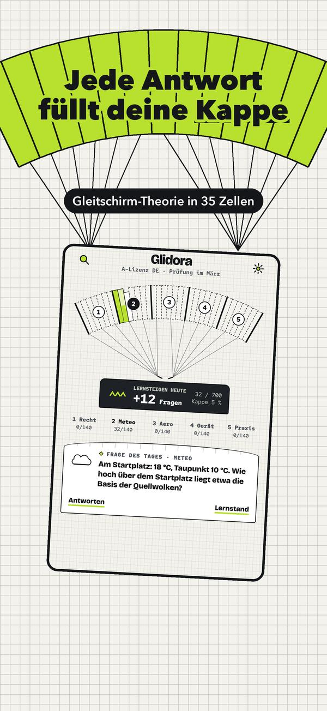
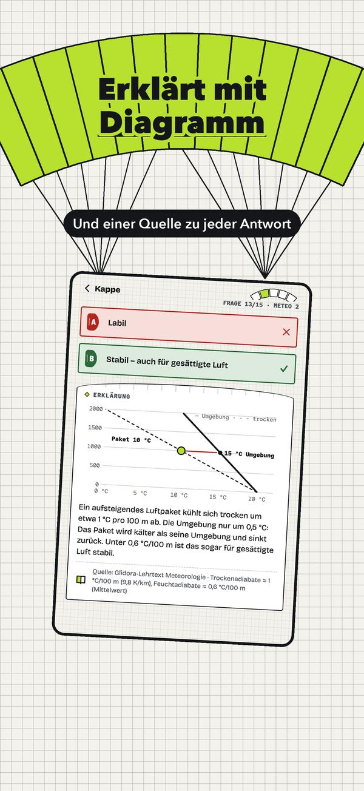
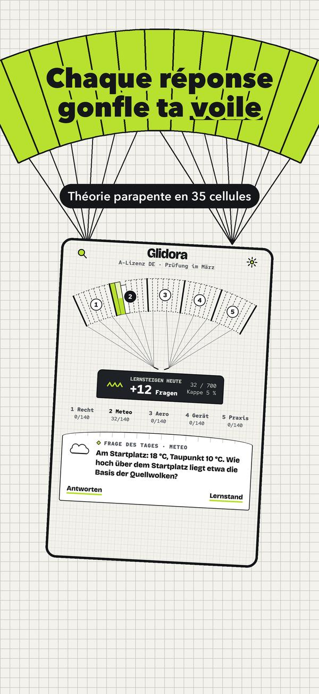
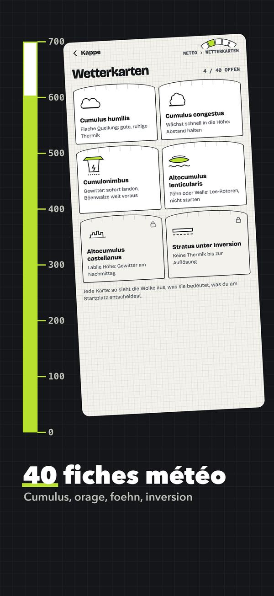
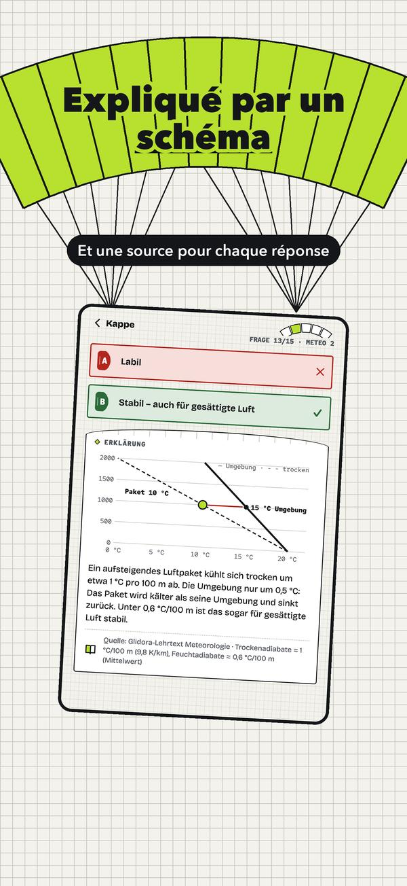

Paragleiter Theorie & Prüfung
Einmal kaufen, kein Abo. Glidora bereitet dich auf die Theorie für den Gleitschirm-Schein vor – A-Lizenz in Deutschland, Paragleiterschein in Österreich, Brevet in der Schweiz. Fünf Lernfelder: Luftrecht und Luftraum, Meteorologie, Aerodynamik und Flugtechnik, Gerätekunde, Flugpraxis und besondere Fälle. Jede richtige Antwort füllt eine Zelle deiner Kappe – bis der Schirm trägt.


Bald im App Store
QCM brevet de pilote, météo
Un seul achat, sans abonnement. Glidora prépare la théorie du parapente – brevet de pilote en France, brevet en Suisse romande. Cinq domaines : réglementation et espace aérien, météorologie, aérodynamique et mécanique du vol, matériel, pilotage et situations particulières. Chaque bonne réponse gonfle une cellule de ta voile.



Bientôt sur l'App Store